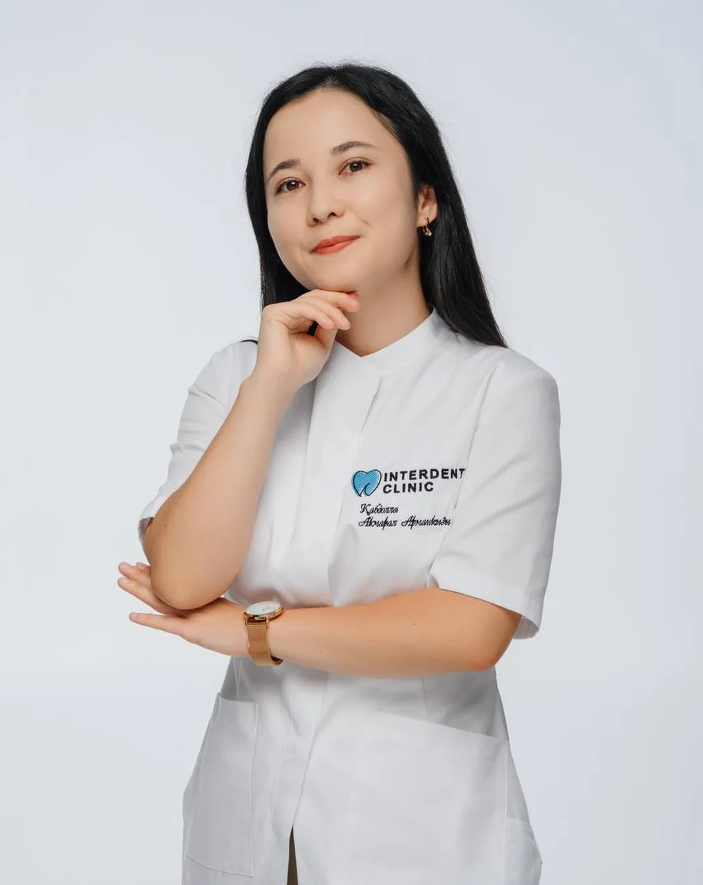
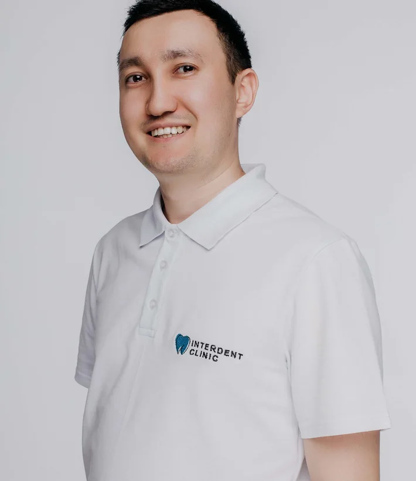
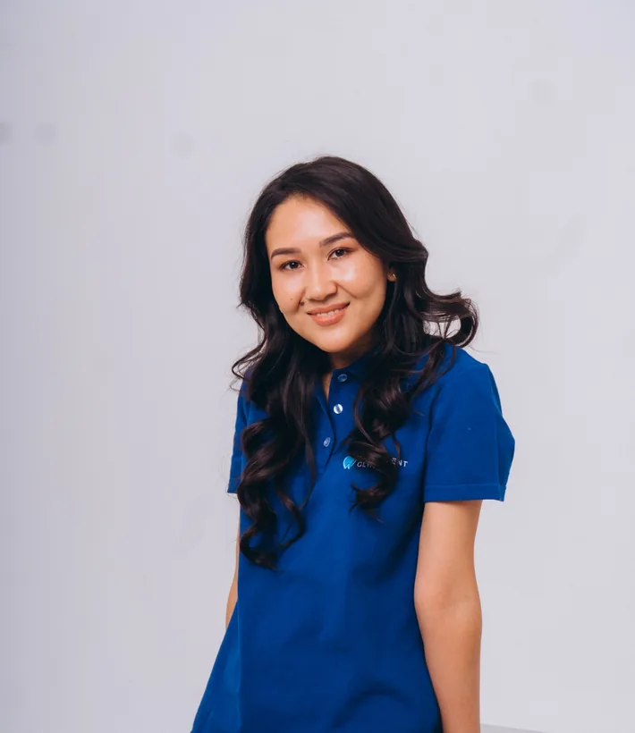
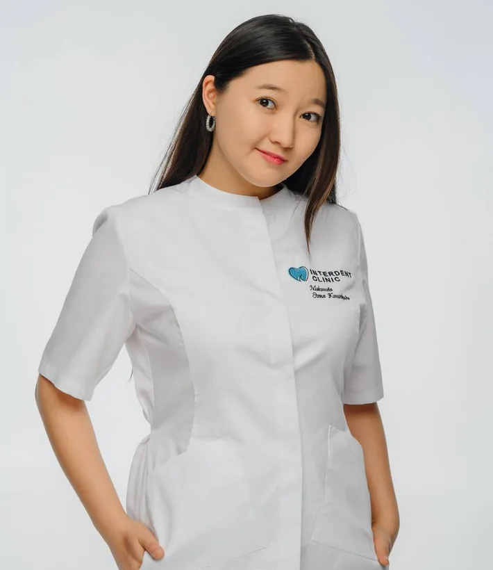

Диагностика перед лечением
3D-томография и рентген помогают оценить состояние зубов и тканей. Микроскоп используют для детальной работы при лечении каналов.
От профилактики до сложных стоматологических процедур. Диагностика, лечение и врачи разных направлений — по одному адресу в центре Астаны.
На Кенесары, 52 · Ежедневно с 09:00 до 20:00

Врачебный опыт, диагностика и специалисты разных направлений — чтобы вы понимали, что происходит на каждом этапе.
3D-томография и рентген помогают оценить состояние зубов и тканей. Микроскоп используют для детальной работы при лечении каналов.
Терапевт, хирург, ортодонт, ортопед и эндодонтист. Разные стоматологические задачи можно решать по одному адресу.
Импланты Straumann, Neodent, Izen, Dentium и DIO, а также брекет-системы и ортодонтические аппараты.
Информация о лицензии открыта, стоимость основных процедур опубликована. До лечения можно обсудить возможные варианты.
От плановой профилактики до имплантации и исправления прикуса — выберите направление, которое вас интересует.

Восстановление утраченных зубов
Straumann, Neodent, Izen, Dentium, DIO; All-on-4 / All-on-6; синус-лифтинг и костная пластика.

Исправление прикуса
Металлические и самолигирующие брекеты, аппараты MSE, Hyrax, Марко Росса, ретейнеры.

Эндодонтия и терапия
Лечение кариеса, пульпита, периодонтита, корневых каналов и реставрация зубов.
Восстановление формы и функции
Циркониевые и керамические коронки EMAX, вкладки, съёмные протезы, цифровой оттиск.
Сложные стоматологические задачи
Удаление зубов, в том числе ретинированных зубов мудрости, пластика мягких тканей.
Профессиональный уход за зубами
Трёхэтапная чистка, отбеливание Opalescence Boost, Vector, Icon и профилактика.
Работа с функцией челюстей
Консультация гнатолога и сплинт-каппы по показаниям.
Основа плана лечения
Консультации, прицельные и панорамные снимки, 3D-томография (КТ).
Не уверены, какой специалист вам нужен? Начните с консультации.
Уточнить в WhatsApp

Interdent Clinic работает с пациентами в Астане. Клиника ведёт историю с 2016 года — эта дата указана в её официальном профиле Instagram. Здесь занимаются лечением зубов, протезированием, имплантацией и исправлением прикуса.
Мы уделяем внимание диагностике и планированию. Для обследования доступны прицельные и панорамные снимки, 3D-томография. При эндодонтическом лечении используется стоматологический микроскоп.
Наша задача — разобраться в вашей ситуации, объяснить возможные варианты лечения и помочь выбрать дальнейшие шаги.
Познакомиться с врачамиЦены из прайс-листа клиники, без скидок. Раскройте нужное направление, чтобы посмотреть стоимость процедур.
Окончательный план лечения обсуждается после консультации и диагностики.
Стоимость All-on-4 / All-on-6 будет доступна в полном прайс-листе клиники.
Цены на лечение кариеса, пульпита и периодонтита указаны с учётом анестезии, коффердама и восстановления зуба.
Полный PDF-прайс будет опубликован после получения файла от клиники.
Уточнить стоимость в WhatsApp ↗Познакомьтесь со специалистами Interdent Clinic, их опытом и направлениями работы.

Стоматолог-хирург
Опыт: с 2015 года
Стоматолог-ортопед
Опыт: более 10 лет

Стоматолог-ортодонт
Опыт: с 2014 года
Терапевт, эндодонтист, микроскопист
Опыт: с 2023 года
Стоматолог-терапевт
Опыт: с 2020 года

Стоматолог-терапевт
Опыт: с 2020 года
Стоматолог-терапевт
Опыт: с 2026 года
Для некоторых специалистов фотографии ещё ожидаются. Это временные карточки, не изображения реальных врачей.
Реальные скриншоты отзывов о клинике. Нажмите на карточку, чтобы прочитать отзыв полностью.
Нужно вылечить зуб, восстановить улыбку или исправить прикус? Напишите нам — поможем записаться на консультацию.
Записаться через WhatsAppКазахстан, Астана
ул. Кенесары, 52
Ежедневно
09:00–20:00
Лицензиат: ТОО «ОркенМед», БИН 200840005030. Лицензия на медицинскую деятельность от 18.04.2023. Приложение №007 от 31.01.2024: стоматология, Астана, ул. Кенесары, 52.
Оригиналы документов, переданные клиникой, доступны для просмотра в формате PDF.